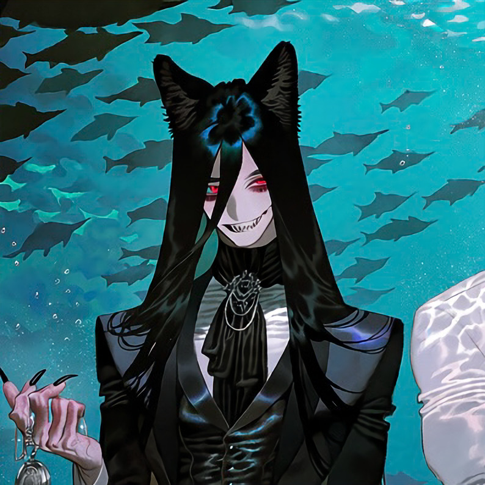

CHARACTER RECORD / 034STATUS: AVAILABLE

✦IMAGE
NOT FOUND
NOT FOUND
セーヴェル
✦ WITH OUTFIT服装込み
PROMPT DATATXT / 034
masterpiece, best quality, ultra detailed, intricate details, boy, adult male, kemono, anthropomorphic non-human, 1.5::long jet black hair, straight waist-length hair, silky hair, loose strands framing face, center-parted bangs::, 1.5::extremely pale white skin, bloodless complexion, porcelain skin, cool undertones, no natural blush::, 1.4::sharp crimson eyes, narrow half-lidded eyes, dark circles beneath eyes, long eyelashes::, 1.5::jagged sharp teeth, uneven pointed teeth, slightly exposed fangs, sinister smile::, 1.4::anthropomorphic black wolf, wolf ears, long fluffy black tail, black fur on ears and tail, subtle canine features::,
1.5::black formal tailcoat, high-collar white dress shirt, black satin waistcoat, black cravat, tailored dress trousers, polished leather dress shoes::, 1.3::ornate silver cufflinks, black gemstone tie pin, delicate chain brooch, black leather gloves, antique pocket watch::, 1.4::slender elegant fingers, long black nails, faint dark veins visible beneath pale skin::, 1.5::enigmatic expression, unsettling elegance, languid gaze, refined but predatory aura, gothic aristocratic atmosphere::,
PROMPT NOT ENTERED